📑 文章目录（16 节）
手腕搓盘（手首皿）是在 IIDX（beatmania IIDX）中，保持 1048 式手指形状不变、直接用手腕去接转盘（皿）的技巧。它非常擅长应对高密度的皿复合，但反面则不擅长连皿，且肩膀也容易疲劳。本文将讲解手腕搓盘的做法与姿势要点、手小够不到时的判断标准，以及练习方法。
习惯手腕搓盘之后，身体已经回不去了
— かみゆー (@kmy573) 2022年8月6日
- 手腕搓盘是保持 1048 式不变、用手腕接盘的技巧，擅长高密度皿复合
- 姿势要点：略微斜站，让手腕基本保持笔直的位置搭在转盘上
- 推盘时伸展手肘并让手腕向内侧微转，拉盘时做相反动作
- 不擅长连皿。先规定只在 ☆12 中使用，同时不要忘掉变指（崩指）
什么是手腕搓盘
手腕搓盘是以 1048 式为基础，通过用手腕去接盘，来尽可能避免破坏固定指法的技巧。
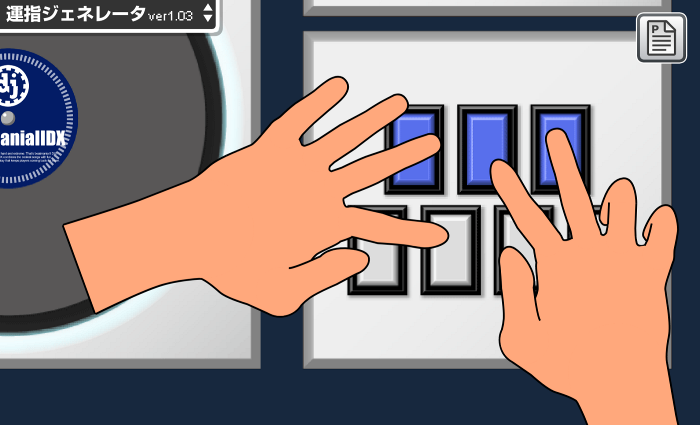
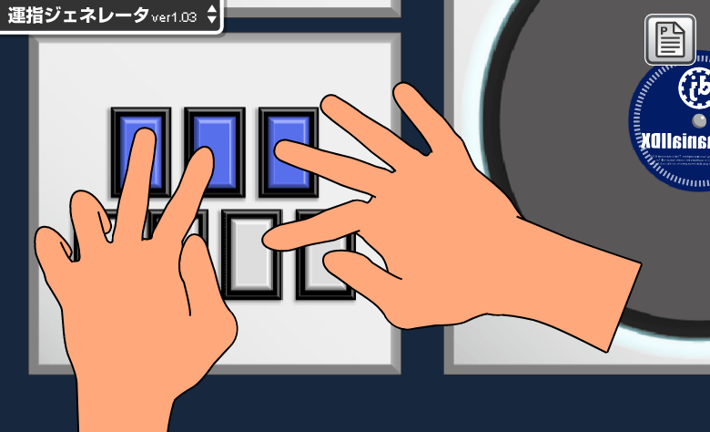
关于 1048 式的详细讲解请参考下面这篇文章。还不会 1048 式的人，请先从熟悉 1048 式开始。
手腕搓盘的优点
- 更容易处理高难度皿复合
- 更容易把绿数字压到极限
更容易处理高难度皿复合
只要掌握手腕搓盘，就能保持擅长键盘的 1048 式手型不变去处理皿复合。比如《冥（ANOTHER）》加速段 BPM 190 附近就是典型例子。
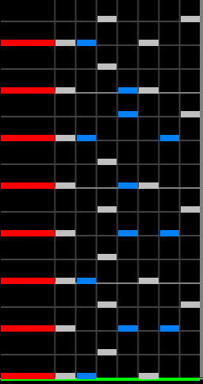
《Confiserie》的尾杀也是如此。
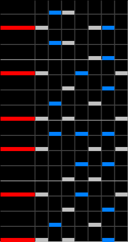
面对这类转盘＋高密度键盘的谱面非常强势。
更容易把绿数字压到极限
手腕搓盘不需要考虑拆指变指，可以把绿数字压低到反应速度的极限。调低绿数字后，屏幕信息量减少，谱面会更容易读懂。
就个人而言，我并不推荐把绿数字压到极限。我认为手腕搓盘是与变指配合使用的“技巧”，稍微留出一点余量会更好。
手腕搓盘的缺点
- 连皿很难处理
- 肩膀容易疲劳
- 外观姿势不太好看
连皿很难处理
手腕搓盘是一种不擅长连皿的姿势。普通搓盘可以灵活运用直到指尖的整个手部，而手腕搓盘只能用到手腕到肩膀这一段。
与指尖相比，手腕、手肘和肩膀不擅长精细动作，因此越细密的连皿就越吃亏。
当然，只要勤加练习，手腕搓盘也能做到一定程度。现在机台的转盘灵敏度也变好了，用手腕搓盘把皿曲打成全白（全 HARD）也完全可行。
但即便如此，面对较长的 16 分〜24 分连皿或复杂连皿，老老实实用手搓依然更稳定。除了手腕搓盘之外，也不要荒废变指的练习。
肩膀容易疲劳
手腕搓盘需要盘侧手臂始终保持抬起（手肘架起），因此肩膀容易疲劳。
搓盘时不用指尖，反而会更多用到肩关节，习惯之前肩膀可能会容易发痛。肩膀疼痛若拖久了会影响日常生活。不只是肩膀，只要感到疼痛就不要硬撑，请停止练习。
外观姿势不太好看
虽然现在用手腕搓盘的玩家变多、大家渐渐看习惯了，但手腕搓盘从旁人看来姿势并不怎么美观（个人感想）。
在摸索自然姿势的过程中，大多数手腕搓盘玩家都会变成面向机台略微斜站、盘侧手肘架起、略微驼背的站姿。
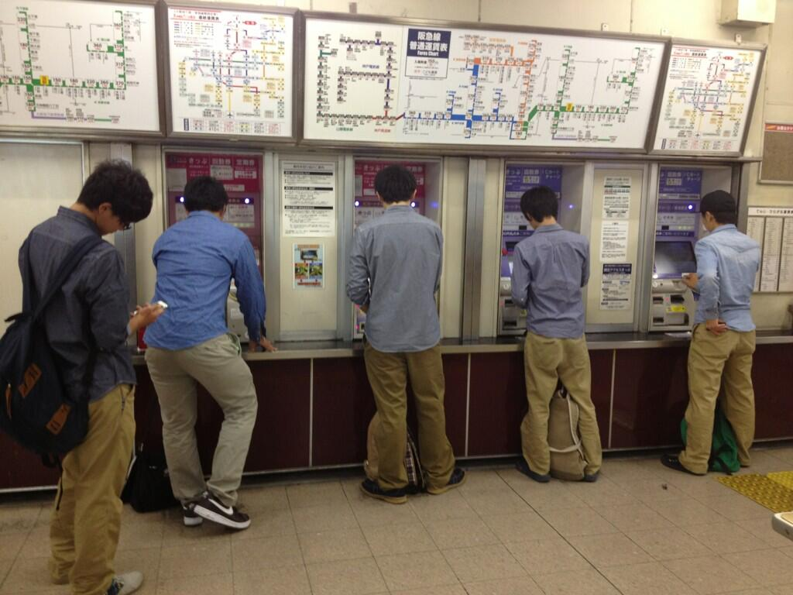
手腕搓盘站得笔直挺胸反而不好操作，这也是没办法的事，但在意旁人目光的玩家最好提前有心理准备。
手小就练不了手腕搓盘吗？够不到时的参考标准
手腕搓盘确实手大一些更好上手，手小会比较困难，这是事实。
手腕搓盘的理想状态，是将手掌靠近手腕的位置（下图红圈处）搭在转盘上时，食指还能按到 3 号键（2P 则是 5 号键）。
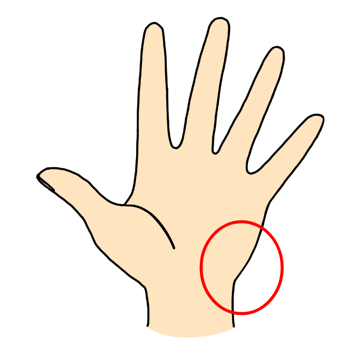
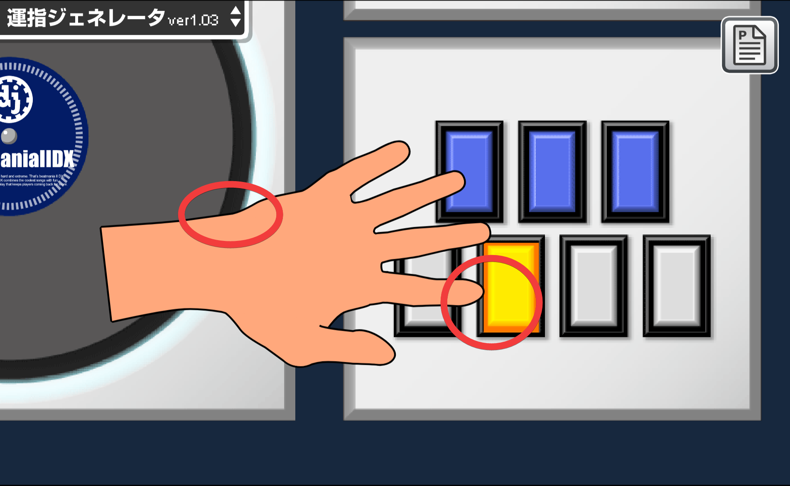
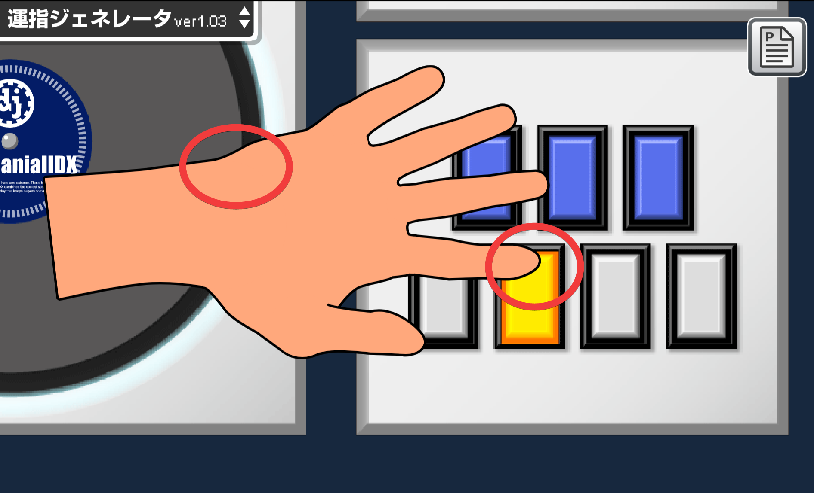
如果搭在转盘上的位置落到了手腕横纹更靠手臂的一侧，搓盘时就无法借用手腕的甩动发力（スナップ），会变得很难操作（单推盘勉强凑合，但推拉交替会非常吃力）。
要想顺手使用，大概需要从手腕横纹到中指指尖有 17cm 左右。作为参考，笔者大约有 20.5cm，富余了约 3.5cm。
日本人手长（手腕横纹到中指指尖）的平均值是男性 18.3cm、女性 16.9cm。因此，平均手大小的女性玩家可能会比较勉强。
手腕搓盘的做法（基本姿势与搓法）
先说前提，符合以下条件的人很快就能习惯手腕搓盘。
- 盘侧是惯用手
- 平时已经在用 1048 式
- 手比较大
笔者就属于这种类型，练了大约 1 个月就能正常实战了。
相反，这几条全都不符合的人会花更多时间。具体来说就是右撇子、打 1P 侧、原本不用 1048 式的人。请放平心态慢慢练。
站位：略微斜站
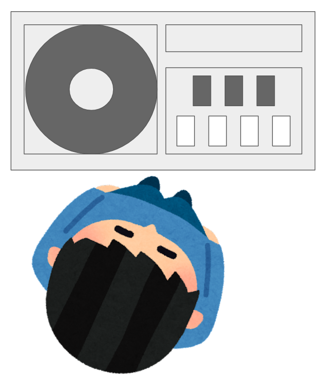
使用手腕搓盘时，身体稍微转向远离键盘的一侧。手腕搭在转盘上时，手腕整体基本呈直线的站姿最为理想。
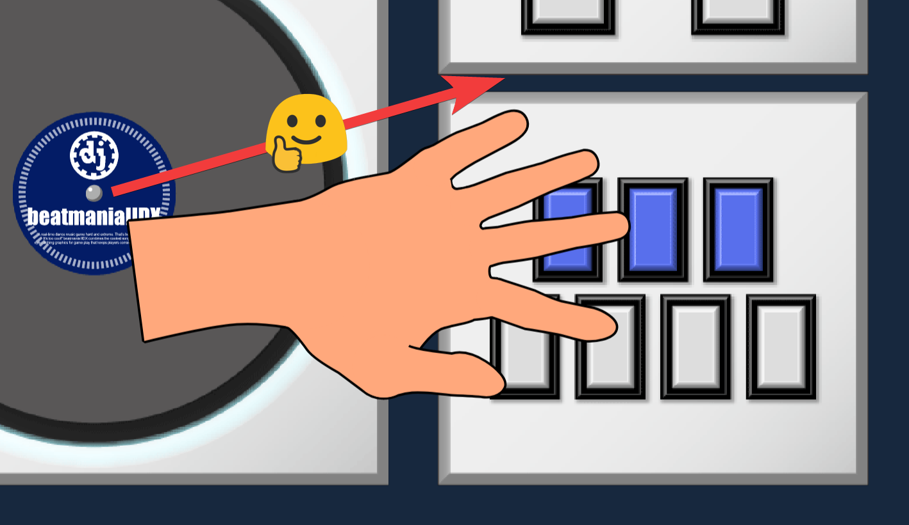
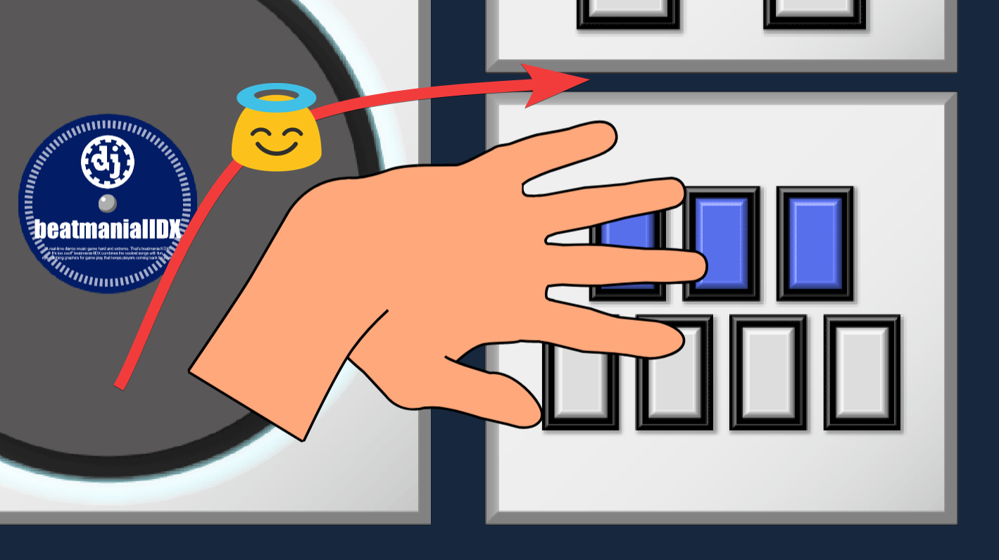
如果正对机台笔直站立，就会像上图那样默认让手腕略微向内弯折，有弄伤手腕的危险。
按键位置
笔者平时大致在以下位置按键。
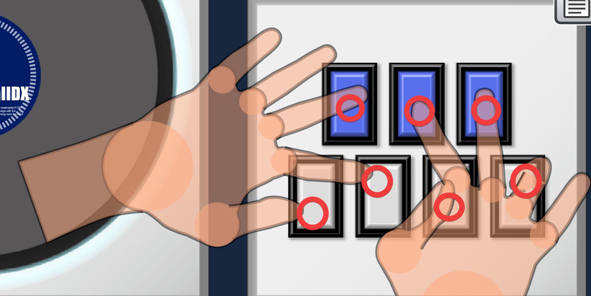
关键在于盘侧的食指与大拇指。食指按在键盘偏上方一点，大拇指按在偏下方一点，这样 1048 式原本不擅长的 13 交互会好按不少——因为更容易利用手的前后运动，发力方式会变得和非盘侧的 45 交互相同。
出于同样的理由，非盘侧的手会稍微向外偏一点，好让 67 交互哪怕轻松一点点。
这部分会因手掌大小与手指长度而异，请自行摸索最顺手的姿势。
搓盘方法
推盘时，在伸展手肘的同时将手腕略微向内侧转动，意识上尽量不让手远离键盘。
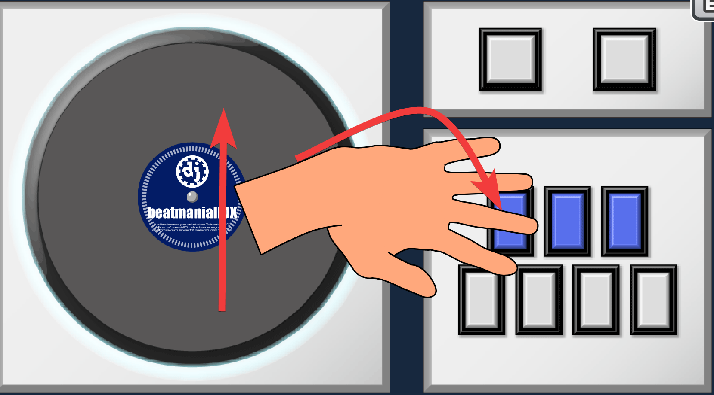
拉盘时则相反，弯曲手肘的同时把手腕转回原位。
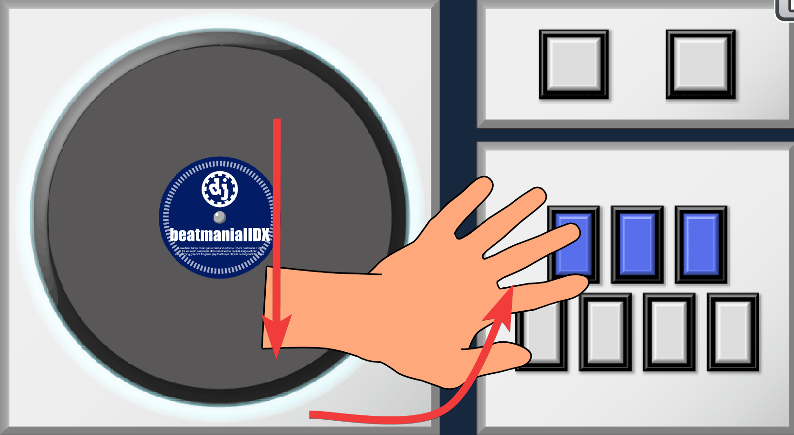
单发盘的感觉是：先推盘，接着把手腕略微抬起一点，再通过拉回的动作恢复原位。
在连皿中持续这样联动手肘和手腕非常困难，对手腕负担也很大，所以手腕搓盘不适合连皿。如果无论如何都必须用手腕硬接连皿，为了避免伤到手腕，请固定住手腕，只靠手肘屈伸来硬撑。
手腕搓盘的练习方法：先只在 ☆12 中使用
手腕搓盘既有优点也有缺点。最理想的状态是只在它占优的谱面使用，但要练到能与变指自如切换需要大量练习；可如果一直只用手腕搓盘，又会忘掉变指和普通搓盘。
个人建议是：先定下规矩，只在 ☆12 中使用手腕搓盘。
- ☆11 以下不用
☆11 以下几乎没有非用手腕搓盘不可的谱面。规定☆11 以下不用手腕搓盘，不仅游玩时不会犹豫，也能适度保持变指练习。
- ☆12 先一律用手腕搓盘
☆12 里其实大部分谱面也不需要手腕搓盘，但一开始细分太麻烦，先干脆规定 ☆12 全部用手腕搓盘吧。
- 按曲目记住哪里用、哪里不用
熟练之后，在 ☆12 里也按具体曲目记住哪些段落用手腕搓盘、哪些不用，实现灵活切换。这就是最终目标。
连皿练习仍然离不开普通手搓与单手。皿曲清单与连皿技巧整理在下面这篇文章中。
手腕搓盘常见问题
手腕搓盘应该从什么时候开始练？
☆11 以下几乎没有非用手腕搓盘不可的谱面，等到挑战 ☆12 的阶段再开始就足够了。请先掌握 1048 式以及 3:5 半固定等变指手法。
不用 1048 式就练不了手腕搓盘吗？
手腕搓盘是保持 1048 式手型不变、用手腕接盘的技巧。从对称固定等盘侧食指/拇指摆放方式不同的指法直接切换会很难，想用手腕搓盘的话，先学 1048 式是捷径。
练手腕搓盘导致手腕或肩膀痛怎么办？
痛的时候不要硬撑，请停止练习。正对机台笔直站立容易导致手腕向内弯曲而受伤，请略微斜站，让手腕在笔直状态下搭在转盘上。
习惯手腕搓盘大概需要多久？
笔者（盘侧惯用手、1048 式、手偏大）大约用了 1 个月就能正常使用。右撇子打 1P 且原本不用 1048 式的玩家，大概会需要更长时间。
总结
手腕搓盘是能保持 1048 式应对高密度皿复合的强力技巧；另一方面，它也有不擅长连皿、肩膀容易疲劳的缺点。
- 略微斜站，让手腕保持笔直搭在转盘上
- 推盘时伸肘并使手腕向内侧微转，拉盘时做相反动作
- 先只在 ☆12 中使用，不要忘掉变指与普通搓盘
凡事讲究平衡，请找到与手腕搓盘最合适的相处方式。其他指法整理在下面这篇文章中。
💬 读者评论与作者答疑（1 组对话）